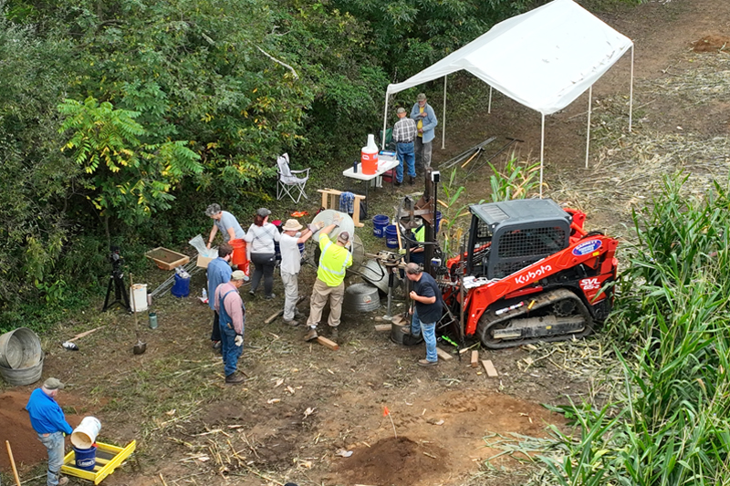
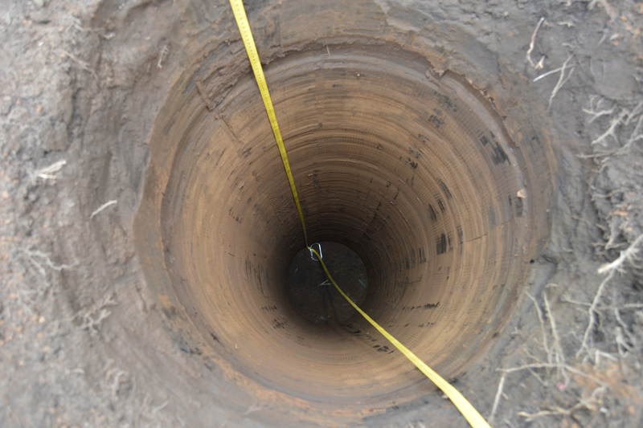
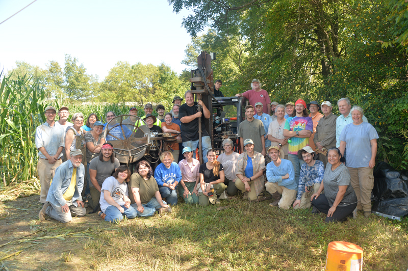

The 2025 PaleoDigger session at the Barton Site (18AG3) was a great success! This innovative research project was greatly facilitated by the enthusiastic crew of volunteers processing all of the silty soil generated by the PaleoDigger and then manually encouraging the soil through the 1/4 inch mesh screens to recover artifacts, all while keeping provenience to 10cm levels! Volunteer archaeologists contributed around 1600 hours of volunteer participation with an average of 30 volunteers per day, and a high of over 40 volunteers during the weekend!
PaleoDigger at Barton
23 test pits were excavated, primarily in 8 meter intervals parallel to the levee of the North Branch of the Potomac River. Twenty-one test pits reached basal river gravels around nine feet below surface and two test pits were terminated at a depth of 43 cm due to the presence of archaeological features. The 21 deep test pits had an average depth of 280 cm (over 9 feet). The deepest was 310 cm (over 10 feet). Over the course of the six day PaleoDigger session, the crew removed and screened 51 cubic meters of soil. That volume of soil is equivalent to 5 2x2 meter test blocks dug to a depth of 250 cm!
3 Meter Test Pit
The 2025 PaleoDigger excavations documented stratified archaeological deposits at Barton. Near surface deposits included Contact period through Middle Woodland artifacts (Figure 4). Late Archaic components were encountered around 1 meters below surface (Figure 5). Deeply buried artifacts were encountered around 2 meters below surface, which likely correlates to the Clovis occupation layer at Barton based on prior excavations.
Middle Woodland Artifacts
Artifacts recovered around 2 meter below surface included chipping debris, early stage biface fragments, and a likely small wedge fragment (Figures X-X). The chipping debris and biface fragments likely indicate a new biface production area related to the Clovis occupation, where hunting tools like fluted points were likely being made. The wedge fragment is suggestive of activities associated with the slotting of bone, antler, and/or wood.
Chipping Debris
Upcoming analyses resulting from the PaleoDigger project include radiocarbon dating of charcoal recovered in association with the Late Archaic artifacts and the deeply buried artifacts. Deeply buried tool fragments recovered at Barton and Paleoindian artifacts from around Maryland will be sent for protein residue analysis, which may provide direct evidence of mammal hunting.
Crew Photo from PaleoDigger2025